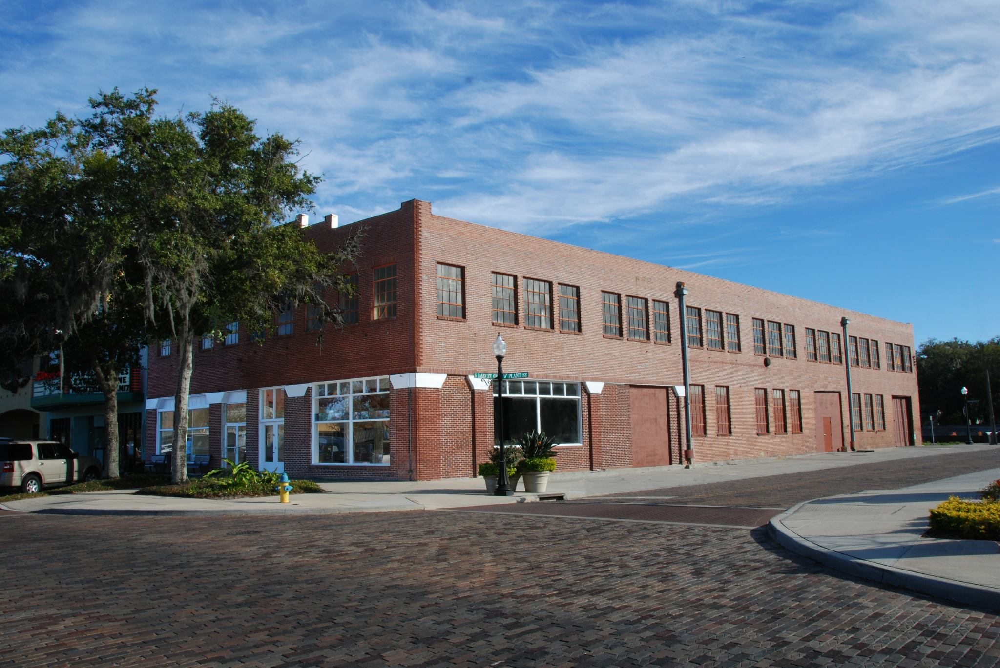
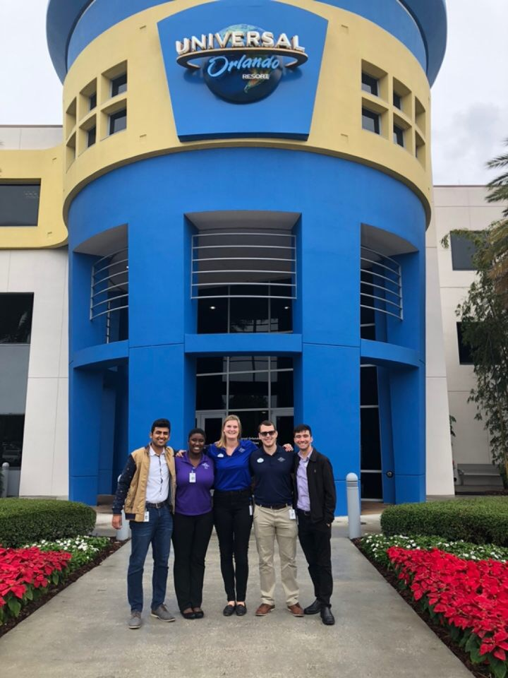
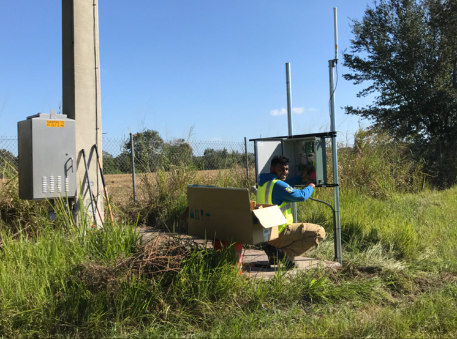

Experience
A visual timeline of my professional path. Click any milestone to open the full story, responsibilities, and project context.
Birket Engineering, Inc.
Full-time embedded systems engineering focused on hardware-software integration, firmware, and electrical systems work.

Birket Engineering, Inc.
Embedded Systems Engineer- Worked on embedded platforms where hardware and firmware had to operate as a single system.
- Built on internship experience and transitioned into a full-time engineering role.
- Continued developing depth in electronics, integration, and production-minded engineering work.
I joined Birket full-time on January 1, 2020 as an Embedded Systems Engineer. The role represents the point where prior internship work turned into long-term engineering ownership and deeper system-level responsibility.
The position aligns closely with my core interests in robotics, firmware development, and hardware-software integration, and it marks the strongest continuation point in my technical career to date.
Birket Engineering, Inc.
An internship centered on microcontrollers, PCB design, and applied embedded systems work in a professional environment.
Birket Engineering, Inc.
Embedded Systems Intern- Programmed 32-bit ARM Cortex-M microcontrollers such as the STM32F7 in C.
- Designed and manufactured electrical schematics and printed circuit boards.
- Applied data structures and algorithms to data moving across UART, SPI, and I2C interfaces.
This internship gave me direct experience with professional embedded workflows and made the transition from classroom concepts to production engineering feel real. The work was technical, hands-on, and close to the hardware.
It also became a defining checkpoint in my career, because it confirmed that embedded systems was the environment where I wanted to keep building long term.
Universal Creative
Engineering internship on UAV research, indoor navigation concepts, and technical vendor evaluation.

Universal Creative
Engineering Intern- Implemented a non-GPS indoor navigation system for drones.
- Researched and developed emerging technologies for UAV applications.
- Maintained vendor relationships and helped evaluate commercial solutions.
At Universal Creative, I worked with the Show Systems team on UAV-focused engineering problems. A major focus was identifying reliable and cost-effective approaches for indoor autonomous navigation without relying on GPS.
That challenge pushed me into a systems tradeoff mindset: balancing reliability, cost, and operational fit instead of just chasing technically impressive solutions. Our proof of concept substantially reduced costs compared to more traditional computer vision-heavy approaches.
PraxSoft Inc.
Early engineering role focused on wireless sensors, environmental monitoring systems, testing, and technical reporting.

PraxSoft Inc.
Assistant Engineer- Worked with wireless sensors and embedded controllers.
- Conducted data analysis and generated technical reports.
- Tested PCBs, assembled systems, and handled quality assurance work.
PraxSoft gave me early exposure to applied engineering in the field. The work connected hardware, data, and real operational outcomes for infrastructure and environmental monitoring systems.
A large part of the work involved the Fog Monitoring System for the Florida Department of Transportation, where I helped assemble units, troubleshoot equipment, collect data, and support technical reporting that demonstrated system performance in practice.